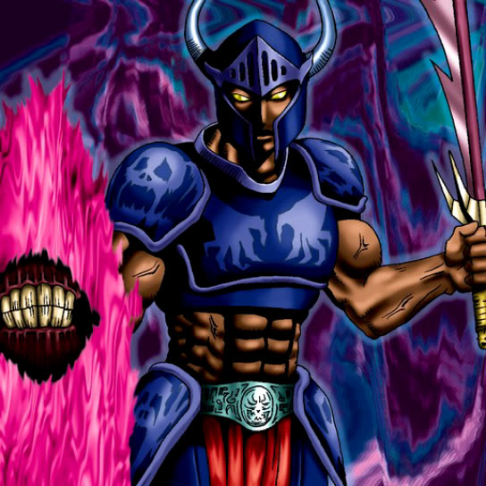

Guardian of the Labyrinth

STATS
ATK: 1000
DEF: 1200DECK COST
Deck Cost per Card: 22Fusion List (9 Possible Fusions)
- Guardian of the Labyrinth + Arlownay = Bean Soldier
- Guardian of the Labyrinth + Bone Mouse = Zombie Warrior
- Guardian of the Labyrinth + Dancing Elf = Dark Elf
- Guardian of the Labyrinth + Dharma Cannon = Cyber Soldier
- Guardian of the Labyrinth + Fairy Dragon = Dragoness the Wicked Knight
- Guardian of the Labyrinth + Fire Reaper = Zombie Warrior
- Guardian of the Labyrinth + Mushroom Man = Bean Soldier
- Guardian of the Labyrinth + The Judgement Hand = Judge Man
- Guardian of the Labyrinth + White Dolphin = Wow Warrior